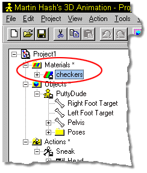

To add an existing material to an object, right click on
To add an existing material to an object, right click on

To add a material to an object, drag and drop the material onto the object or any named group under the object.
Tell Me About:
Material List
Creating a New Material
Removing a Material
Material Types
Global Axis